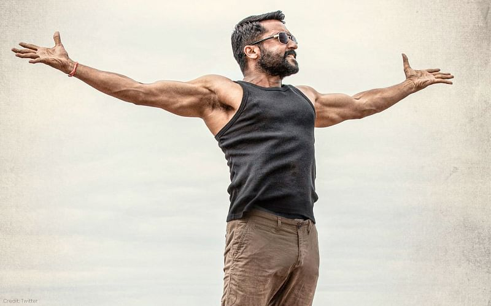

Actor|Singer|Producer|Director|Lyricist
Suriya was born as Saravanan on 23 July 1975 in Madras (now Chennai), Tamil Nadu, to actor Sivakumar and his wife Lakshmi. He attended Padma Seshadri Bala Bhavan School and St. Bede's Anglo Indian Higher Secondary School in Chennai, and obtained his under graduate degree B.Com from Loyola College, Chennai.Suriya has two younger siblings, a brother Karthi and a sister Brindha.Suriya with his wife Jyothika at the launch of her film Kaatrin MozhiSuriya is married to Jyothika. The couple, after dating for several years, got married on 11 September 2006.They have two children.